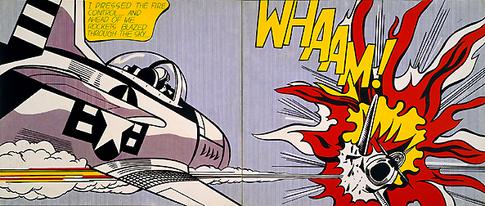

Whaam!
Roy Lichtenstein · 1963 · Acrylic and oil on canvas, two panels · Tate, London
In copyright. Small image shown under fair use, for reference and commentary.
The source is a single panel drawn by Irv Novick for a DC war comic of February 1962. Lichtenstein redrew it small on two sheets of paper, projected the sketch onto canvas, and made the dots by pushing paint through a handmade metal screen with a scrub brush. The lettering was planned in white and ended up yellow. The two canvases together measure 1.7 by 4 metres. When the Tate bought the work in 1966 for £3,940, some trustees objected, the sculptor Barbara Hepworth among them.